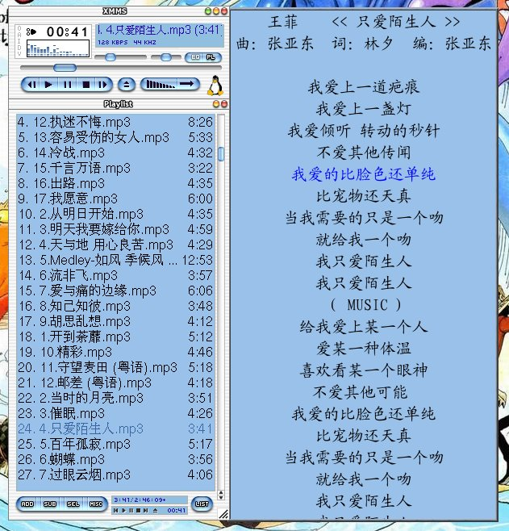
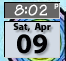
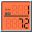

事情似乎变得复杂了，因为 emacs-wiki-journal 似乎不支持 emacs-wiki-home-page 这一项，所以想让 blog 里出现指向首页的返回标签看来难了点，得想点办法解决才行……
还有就是 blog 里面的 anchor，和所有的 link 都是一个样，color = blue，还得修改原来的 stylesheet，可是我的 css……太差了些了。幸好五一快到，准备大修喽。
因为使用了 emacs-wiki 的 projects，增加了一些目录，所以以前编写的 upload shell script 不管用了，还得花时间编一个才照，这么算来算去，也够累人的……
后记:
终于设置好 emacs-wiki-journal，虽然现在显得有点勉强，但看起来还可以了，以后又可以懒一些了，人啊，要有多懒就会多懒……
明天又有人生日，在我周围四月出生的人咋就这么多呢？不管怎样，happy birthday 了，要开心才对~
五一黄金周又快到了，不过还没想好要到哪里去。其实想去的地方蛮多的，比如西安啊等等，只是没有钱，如果有钱的话，就不会愁没地方去了……
我们寝室四个人想象力匮乏，至今能想到的较好的方向是往离学校近的同学家跑，这样花费不多，跟西安方向相比是不行的了，但总比窝在寝室爽。
这几天有到 http://slackware.8866.org 去了，《Slackware Linux 大全》几乎可以说完全是 babo 一个人在努力着，挺不容易的，所以卖力写了几章，尽量让大家都看得懂。真希望有更多的 Slacker 参与进来，如果是有经验的老用户就更好了。Linux 的用户本来就不多，虽然现在听起来很新潮，很火，但真正用的人有多少呢。
现在周围又有好几个同学搞 Linux 了，只可惜，装的是在国内鼎鼎大名的 Redhat9.0 发行版。Redhat9.0 是 Redhat 公司几年前的版本了，也是 Redhat 系列的最终版本。Redhat 本想放弃 Linux 的个人桌面应用，以 Redhat9.0 作为结束，可是 Linux 的桌面发展得的确好，而且更多的大公司加入了 Linux 的个人桌面阵营，Suse，Mandrake(现在是 Mandriva 了)，Gentoo……太多的发行版，越来越好用的系统，Redhat 怎能放弃自己发展了好几年的个人桌面市场呢，于是 fedora 成立了，fedora 是 Redhat 用来测试商业 Linux 的一个产物，但它现在处于什么位置，说不清楚，但总比 Redhat9.0 好些，起码它现在已经发展到了 core3，而且文档齐全，用户众多。
新发行的版本，遇到无法确认的新硬件的机会少，也不会因为安装什么软件时提示缺少什么依赖包。本来 Redhat rpm 包的依赖关系就复杂，所以才有 Slackware 社区中传颂的"When you learn Redhat, all you learn is Redhat.When you learn Slackware, all you know is Linux"这种说法。当然我也不是说什么发行版好，什么发行版不好，只不过新机器用新系统才说得过去罢了。
只不过现在周围讨论 Linux 的声音越来越多了，但提到的不是 Redhat，就是红旗，我都郁闷了……
送个介绍 Linux 发行版的网址给大家: http://distrowatch.com/
Yahoo 的生日提醒真不错，不会因为太忙而忘记什么。Yahoo 就是 Yahoo，想得还真周到。赶紧把认识的人的所有生日都添上，哈哈~
哈哈，My Xmms Xlyrice 歌词秀，谢谢小锁大哥了……

最近想把 locale 改成 gbk，xmms 下面几乎不用怎么改，只是重新设置了一下字体就可以了，而且用了 simsun 字体，相比以前用的 kaiti 要漂亮得多。如此定义：
主窗口：
-adobe-helvetica-medium-r-normal-*-13-120-*-*-*-*-iso8859-*,\
-misc-simsun-medium-r-normal-*-13-*-*-*-c-*-gbk-0
播放列表：
-adobe-helvetica-medium-r-normal-*-16-120-*-*-*-*-iso8859-*,\
-misc-simsun-medium-r-normal-*-16-*-*-*-c-*-gbk-0
两个其实是差不多的，在 zh_CN.GBK 的 locale 下面没有问题。
但是 FVWM 可把我难坏了，menu 等的设置不用怎么改变，但是标题的设置却不行。就是说 menu 和标题等等的设置 是不同的，晕……如果英文字体放在前面，用 iso8859 的话，menu 里可以显示定义在英文字体后的 simsun，但是在标题栏却不一样，搞了半天，尝试了很多方法，最后如此标题栏的中文才出得来：
"-*-helvetica-bold-*-normal-*-14-140-*-*-*-*-iso10646-*,\
-*-simsun-medium-*-normal-*-16-*-*-*-*-*-*-*"
虽说 GB2312 和 GBK 有点差别，但是这些都不算太重要，接下来的才是重头戏。
相比来说 emacs 才是最难的。到 http://mule-gbk.sourceforge.net/ 下载了 mule-gbk 之后，发现在系统中使用 emacs 还算好，但是用 EmacsWiki 发布的页面，却出现乱码，恰巧那天学校网络太差，时断时续，心里蛮多的问题解决不了。没有网络，没有 google，是天底下最痛苦的事情……
今天有到 Liyu 维护的 EmacsWiki中文 上去，看到了里面的 FAQ，为什么使用了mule-gbk之后Wiki链接发布时出现乱码?，尝试了一下，发现乱码的问题解决了，但文件的保存却不是 chinese-gbk 或 chinese-gbk-unix，而是别的什么 emacs-mule 和 raw-text，而且 EmacsWiki 的高亮字体变得不堪入目，sigh……
最后决定还是用回我的 zh_CN.GB2312 算了，毕竟这个在自己的机子上安全点，等到 Emacs 最终支持了再换 locale 吧。
虽说是周末，却比平常要忙碌得多，除了数据结构的作业一直在赶，一些新近的课程以及大大小小的实验都忙得让人快要疯了。特别是为了完成编程题目，搞得头好大，差点连周围的人都不认得……
最近把工作完全放到 slk 下面来完成了，包括编程等等东东，这么好的系统不用岂不可惜:)。在这里不用整天考虑那些防火墙的升级包，为虫虫的事情闹着要格盘，也不必操心 Win 系列软件升级带来操作上的改变，为了一点小事忙得一团遭……其实呢，上面的这些都不是主要的，毕竟我也是 Windows 的老用户了，这些东西对我来说最熟悉不过。但最主要的还是在 slk 下面的方便，自由。完全是自己设置的东西，简洁的桌面，自定义的快捷键，还有一些方便而实用的设置（bash 的类 emacs 操作）……使用越久，系统对你来说越是透明，而这种感觉难以用言语表达……
要不是因为游戏、Word，我早就把机子里时不时需要磁盘整理的 Fat32 分区给删得干干净静……
最近观摩了一些 FVWM 达人的主页，偷学了好些东东，哈……
 
上面是一些 DocApp，左边那个的用途一看就知道，右边那个呢？其实是一个用于邮件提醒的小软件，很人性化的东东，放在桌面很惹眼，而且方便实用。虽说这些 DocApp 是 Windows Maker（Not M$ Maker）的特色，但 FVWM 也可以使用它们，而且效果也不差。
更多的 DocApp 请看：http://www.dockapps.org
Windows Maker 的网站实在是很漂亮：http://www.windowsmaker.org
四月蛮多人生日的嘛，先祝贺我的老友大牛、秀风生日快乐~
在地球上存活十几、二十几年不容易的啊，牧羊座的要加油~!
不小心又想到自己，再过几天就到生日了，为什么就比你们迟那么几天???这么多人的生日都挤到一起，要不是因为大家各处奔波求学，聚到一起不知道要闹成什么样……